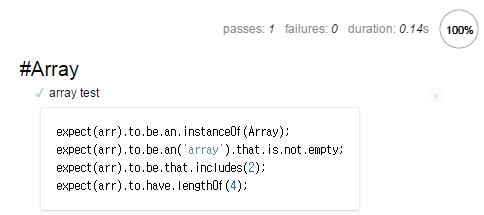
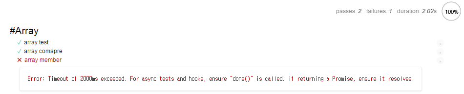

Mocha Tutorial - Step 06. Mocha 브라우저 구동
Step 01: Hello World!부터 시작으로 지금까지 우리는 $ mocha 명령을 통해 터미널에서 실행하였다. Mocha는 터미널 뿐만 아니라 gulp의 task를 통해 실행도 가능하지만, 이 밖에도 브라우저에서 구동되도록 지원하고 있다.
우리는 이번 Tutorial에서는 Mocha를 브라우저에서 구동하는 방법을 알아보겠다.
index.html
먼저 html 파일을 생성하도록 하겠다. 추후에 이 페이지를 실행시켜 Mocha를 구동할 것입니다.
1 |
|
이 코드는 다 알 것이라고 생각된다.
코드를 보게 되면 Mocha에 필요한 mocha.css와 mocha.js 그리고 chai.js파일을 불러왔다. 해당 Tutorial에서는 node_modules에 포함된 파일을 불러왔지만 CDN으로 불러올 수 있다.
CDN은 아래를 참고하자.
https://cdn.rawgit.com/mochajs/mocha/2.2.5/mocha.css
https://cdn.rawgit.com/mochajs/mocha/2.2.5/mocha.js
https://cdnjs.cloudflare.com/ajax/libs/chai/4.0.2/chai.min.js
이렇게 필요한 소스를 불러온 후 Mocha 설정에 관련된 setup을 진행한다. 그런 다음 테스트 스위트와 테스트 케이스가 포함된 .js파일을 로드한다. 마지막으로 onload 인터페이스와 함께 run()을 통해 Mocha를 실핼하게 되어있다. 우리는 아직 test.js를 정의하지 않았기 때문에 실행을 한다고 하더라고 결과가 나오지는 않는다.
test.js
이제 index.html파일이 준비되어 있으니 test.js를 정의하도록 하겠다.
1 | var expect = chai.expect; |
터미널에서 실행할 때와 다른 점은 chai.expect 부분이다. 브라우저 구동할 때는 이미 index.html에 우리가 Chai를 불러왔기 때문에 별도로 require하지 않아도 된다.
테스트의 내용을 잠깐 살펴보면 Array의 타입과 데이터가 존재하는지에 대한 몇 가지 테스트이다. 이제 브라우저를 실행하면 결과가 출력된다.

터미널보다 훨씬 더 보기 편리하다. 해당 테스트 케이스를 클릭하게 되면 테스트를 진행한 코드를 볼 수가 있다. 그리고 상단에는 passes, failures, duration을 확인할 수 있다.
테스트가 너무 짧은가? 테스트 케이스를 더 추가하여 다시 확인해 보자.
아래 코드를 test.js에 이어서 작성하자.
1 | it('array compare', function () { |
먼저 결과를 보자.

array member테스트의 경우 브라우저에도 3000ms뒤에 실행하는 것을 볼 수 있다. 그리고 Step 04: 비동기 처리에서 배운 비동기로 처리하였으며, 3000ms후에 실행하기에 오류가 발생한다. 발생한 오류에 대한 내용도 출력이 되는 것을 확인할 수 있다.
외부 모듈 불러오기
우리는 Step 05: 외부 모듈 테스트을 통해 외부 모듈을 불러와서 테스트를 작성하였다. 그리고 브라우저 구동에서 외부 모듈을 어떻게 불러오는지 대략적인 설명이 있었다. 그 내용을 자세하게 알아보겠다.
Step 05: 외부 모듈 테스트에서 사용한 ModuleSum.js를 사용하겠다.
1 | function sum(num1, num2) { |
동일하게 합계를 구하는 함수이다. 하지만 다른 점은 export를 하지 않았다는 것이다. 단순한 function이다. 이제 이 ModuleSum.js는 index.html에서 불러오도록 하겠다.
1 | <!-- //... --> |
불러온 ModuleSum.js를 가지고 테스트 케이스를 작성하겠다. test.js에 테스트 스위트를 추가해야겠다.
1 | describe('#ModuleSum', function () { |
Mocha의 브라우저 구동은 매우 다루기 쉽고 작성하기도 쉽다. index.html에 설정만 적당하게 잘 만들어 놓는다면 이보다 편한 것도 없다.
그럼 이제 설정을 적당하게 만드는 방법과 Mocha의 설정은 어떻게 하고 어떤 것들이 있는지 확인해보겠다.